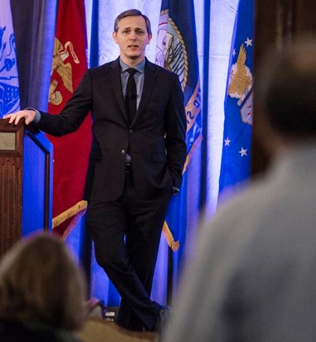

Since arriving in the Chicago area in 2014, Lenny has worked in a number of Director-level
roles in various nonprofit organizations. His work has mostly focused on assisting veterans
and their families, specifically in the area of employment. He spent a year as Director of
CareerPlace, a Palatine-based nonprofit that assisted individuals in job search. He has also
conducted numerous workshops at local libraries for those still seeking employment.
Lenny left his last position as Director of Operations for Illinois Joining Forces in September 2019 to
return to school and enhance his personal and professional development.

Strategic Communications 1992-2014
Lenny started his military career as a Broadcast Journalist working in radio & television
production. During that period, he served as on-air talent, as a field reporter, and
specialized in video editing and production.
As his career advanced, Lenny moved onto the public relations side of the job. He was the speech
writer for several senior leaders, facilitated media engagements while deployed to Baghdad, Iraq,
and initiated the first social media presence for the Army’s Training & Doctrine (TRADOC) command.
He closed out his career as the Command Sergeant Major for the 24th Press Camp Headquarters at Fort Bliss,
TX.